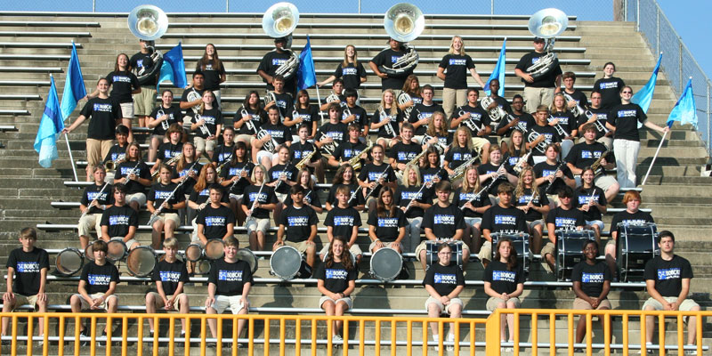
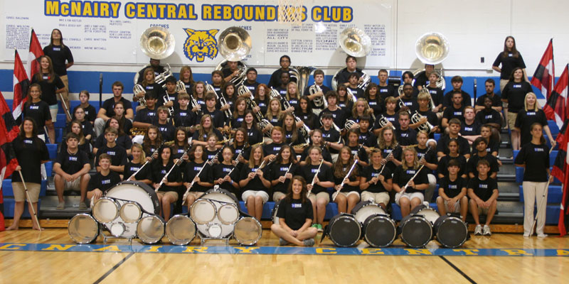
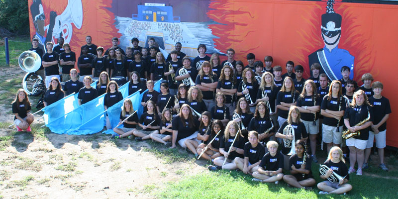
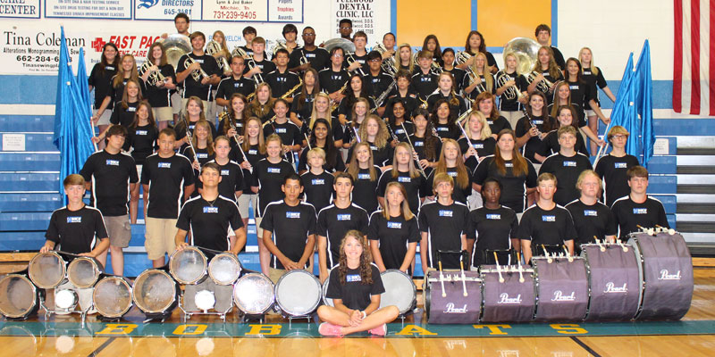
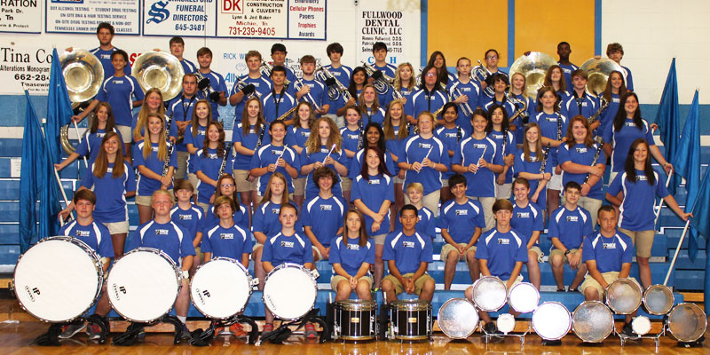
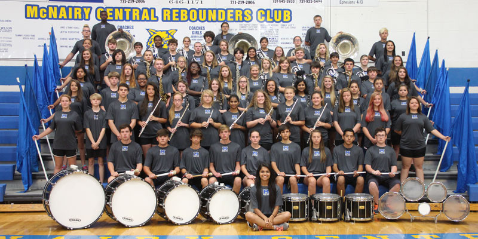
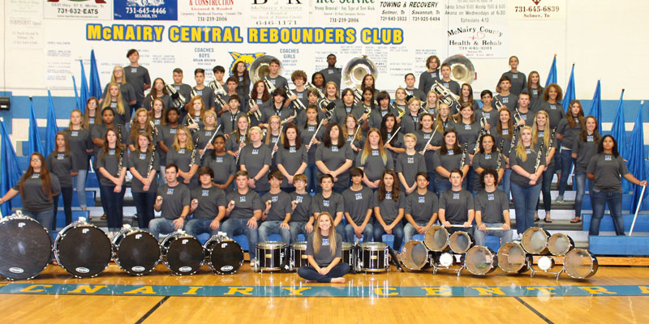
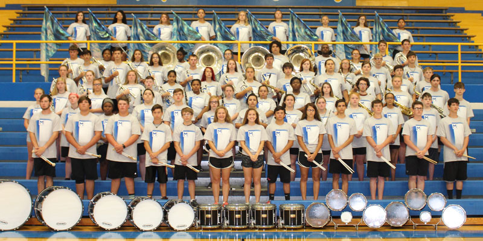
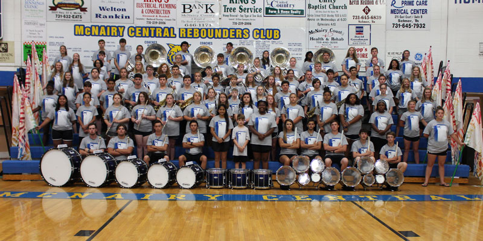

MCHS BAND
2010 - 2011: Take Flight

Gibson County Marching Invitational
- 2nd Place Overall Band Division II, 1st Place Band Class 3A
WTSBOA Marching Festival
- Superior Auxiliary, Superior Percussion
Crusader Marching Invitational
- 2nd Place Band Class A
Memphis BandMasters Championship
- 3rd Place Band Class 2A
UTM Skyhawk Marching Invitational
- 3rd Place Band Class 3A
Dyersburg Symphony of Sound Marching Invitational
- 1st Place Band Silver Class, Best Soloist Division II, Jim Godsey Memorial Symphony of Sound Cup
West Tennessee Small Band Championship
- 1st Place Band Class 4A, 1st Place Overall Soloist, The Jack & Kathy Green Pit Crew Award Championship Cup
Arkansas Open
- Superior Band, 7th Place Band Overall
Division II State Contest
- 6th Place Band Finals
2011 - 2012: This is War

Gibson County Marching Invitational
- 2nd Place Field Commander Division II
West Tennessee Small Band Championship
- 1st Place Band Class 4A, 1st Place Overall Percussion
Huntingdon Invitational
- 1st Place Band Class A, Grand Champion Division III
Liberty Crusader Invitational
- 3rd Place Band Class A
Dyersburg Symphony of Sound Marching Invitational
- 1st Place Band Silver Class, 1st Place Band Division II
Memphis BandMasters Championship
- Superior Ratings
Tennessee State Division II Championship
- 5th Place Band, Most Outstanding Percussion
2012 - 2013: Voodoo

Union City Invitational
- 3rd Place Band Class 4A
Choctaw Classic
- 1st Place Band Class 3A, Precussion Class 3A and Division II
Gibson County Invitational
- 1st Place Band Preliminaries, 4th Place Band Overall
UT Martin Invitational
- 1st Place Band Class 2A, Small Division Grand Champion
Crusader Invitational
- 1st Place Band Class B
Dixie Championship
- 1st Place Band Class 4A
BandMasters
- Excellent Rating
Tennessee State Division II Championship
- Superior Band, Percussion, Field Commander, Excellent Color Guard
2013 - 2014: Industrial Revolution

Union City Invitational
- 2nd Place Band Class AAA
Choctaw Classic
- 1st Place Large Division Grand Champion
UT Martin Skyhawk Invitational
- 2nd Place Band Class AA
Liberty Tech Crusader Invitational
- 1st Place Band Class B, Highest Overall Percussion The Darius Forbis Award
Gibson County Invitational
- 1st Place Band Class AAA Preliminaries, 7th Place Band Finals
Tennessee State Division II Championship
- Superior Ratings, 9th Place Band
2014 - 2015: Once Upon a Dream

Gibson County Marching Invitational
- 1st Place Band Class AAA Preliminaries, 7th Place Band Finals
Crusader Invitational
- 2nd Place Band Class B
Skyhawk Marching Invitational
- 2nd Place Band Class AA, 2nd Place Small Division
Henry County Marching Invitational
- 3rd Place Band Class AAA, 1st Place Visual Class AAA, Band Excellent Rating
University of Northern Alabama
- 1st Place Band Group III Open, BEst Visual, Best Overall Effect, Best Color Guard
Tennessee State Division II Championship
- Superior Ratings, 6th Place Band
2015 - 2016: Plugged In

Union City Marching Invitational
- 4th Place Band Finals
Gibson County Marching Invitational
- 2nd Place Band Class AAA Preliminaries, 6th Place Band Finals
Bethel University Marching Band Contest
- 2nd Place Band Class BB, 2nd Place Band White Division Preliminaries, 6th Place Band Overall Finals
Henry County Marching Invitational
- 1st Place Band Class AAA 2nd Place Visual Preliminaries, 3rd Place Band Finals
Tennessee State Division II Championship
- Superior Rating, 6th Place Band Finals
2016 - 2017: Smoke and Mirrors

Union City Marching Invitational
- 7th Place Band Overall
South Gibson County Invitational
- 1st place Band, Percussion, Drum Major, Color Guard Class 4A, 3rd Place Band Overall
Gibson County Marching Invitational
- 7th Place Band Overall
UT Martin Skyhawk Marching Invitational
- 5th Place Band Overall
Tennessee Division II Marching Band Competition
- 6th Place Band
2017 - 2018: Tied to The Ocean

South Gibson Marching Invitational
- Class 1st Place Band, Percussion, Color Guard, Drum Major, 3rd Place Band Overall
Gibson County Marching Invitational
- 2nd Place Band Preliminary, 3rd Place Band Finals
UT Martin Skyhawk Marching Invitational
- 1st Place Band, Percussion, Color Guard, 4th Place Band Finals
Tennessee Division II Marching Band Competition
- Superior Ratings, 5th Place Band Finalists
2018 - 2019: More Than Words

Huntingdon Marching Invitational
- Class D 1st place band, Percussion, Color Guard, Drum Major Division II 1st place band, Division II Grand Champion
UT Martin Skyhawk Marching Invitational
- Class 2A 1st Place Band, Finals 3rd place Band
Gibson County Marching Invitational
- 2nd Place band, Finals 3rd place Band
Tennessee State Division II Marching Band Competition
- 4th Place Band